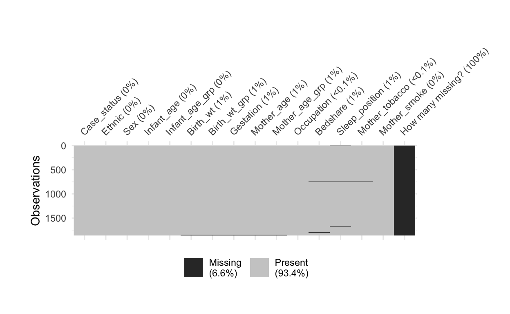

Introduction
In the last session, we discussed some basic concepts related to the use of R for statistical computing.
This session, we will focus on continuing to take baby steps with R and revise and develop some of the concepts from the last tutorial.
We are going to take a plunge in the grown-up world of statistical computing and coding. This can be nerve wracking, but with a bit of practice, I think you’ll find it deeply satisfying, and it will open up many different career opportunities.
We will learn how to:
- navigate the
posit™ interface - learn how to write comments in your code using
# - install and load libraries, extending the functionality of
R - import data
- understand the types of variables we may have in our data, and
- check the integrity of our data, focusing on: duplicates, missing data, and ranges.
Navigating the posit™ interface
In this session, we will be practising some coding on the web, but ultimately, we want you to build confidence with using Posit,™ an ‘integrated development environment’ or IDE for coding R.
You can download a free version of Posit to run on your Windows™ or Mac computer™ or as we will do in this course, we will use Posit cloud.™ You will need to sign-up for an account, but if you use less than 25 hours per month, it will be free. The terms of the free account are here. The benefit of using Posit cloud™ is that we don’t have to install anything, and sometimes there are problems with permissions that can cause trouble for students starting out.
Our aim here is keep things as simple as possible.
Using R and posit ™ can be unforgiving. It is case-sensitive and if you don’t get the function and object names exactly right, R will not understand what you are trying to tell it to do. R, although very sophisticated, is a super dumb machine! It carries out to the letter exactly what you tell it. Please bear this in mind next time you are troubleshooting with it!
Also, it is useful to litter your code with comments, so that if you forget what your code is doing, you can read your comments to explain what is happening. When you are coding, you have to bear in mind your forgetful future self! These can be done, simply by using a # sign in front of what you are writing.
posit has four different parts and at first it can be a bit intimidating. Let’s explore the different parts of the program before we start.

What are the four different panes in posit™?
It seems strange, but the Source pane sends commands to the Console. This is so that you have a record of what you’ve done as your Source file, which is simply plain text. The file extension, which is the type of file you create when working with R is a .R file. The Console is like the brains of the operation and executes your commands from the upper Source window. The right upper pane shows the objectss or datasets or other objects that we are working on and the bottom right pane has different tabs to see our files, plots, packages and help.
What if I don’t see the Source pane?
In posit, I suggest to go to the View -> Move Focus to Source to bring up the source pane if it is not present.

Why use code?
Most of us are probably familiar with ‘point and click’ computer programs that hide a lot of the complexity of computer commands from us. This is what we were using with iNZight in the POPLHLTH 216 course. They are generally very good for many things. One of the problems, however, with ‘point and click’ systems is that they don’t easily allow you to see a record of what you have done to share with others (reproducibility), and they make it difficult to redo a series of complex commands that may need to be updated. Data analysis for epidemiology often requires reproducibility and so coding is often necessary.
Test your understanding…
Ok, so now we know something about how our interface will work.
Extending R by using libraries
R is like a ‘go cart’ that many, many, many people have contributed to and has been turned into a Rolls-Royce. Basic mathematical and statistical functions are ‘built-in’ to R, but libraries are little ‘packages’ of code with additional functions that allow us to extend the use of R.
Four libraries will help us achieve our goals today will be:
riowhich helps us import a variety of data from a wide variety of formats, such as Excel of comma delimited files (.csv). See here for more information.
visdatThis helps us see missing data in our data.frame in a visual manner.
skimrskimr is a package for summarising our data.frame. See more information here.
To install libraries, we need to be connected to the internet!
To install and load libraries in R we use the following code:
install.packages("rio")
library(rio)This is the simple way. If you have already loaded rio, then a way to not have to re-install it is with a bit more code that I’ll use quite frequently:
if(!require(rio)) install.packages("rio")
library(rio)This is a bit complex, but illustrates a useful function. In computing we can make the computer do stuff if a certain condition is fulfilled or is TRUE. This is called conditional logic. It is vitally important.
The
if(!require(rio)) bit, is saying “have a look and see whether you already have the rio package”. The
require(rio) bit will return a logical value of TRUE if it is already loaded in your computer, and FALSE if not. We only want the computer to install the library if it isn’t already installed. If it is not there, the result of require(rio) will be FALSE. The if function only executes the following function if TRUE, so we need to turn the TRUE into a FALSE and vice versa. This is what the ! does. Don’t worry if you don’t get this.
As an aside, ! is a logical operator. These compare Boolean values (TRUE or FALSE) and then return either TRUE or FALSE. They are often used as part of conditional logic, or executing certain bits of code if some condition is met.
!is a logical NOT. It changes aTRUEto aFALSEand vice versa e.g. (!TRUEisFALSE).&is a logical AND. It returnsTRUEif both values are true, otherwise, it returns false e.g. (TRUE & FALSEisFALSE).|is a logical OR. It returnsTRUEif either of two values are true, otherwise, it returns false e.g. (TRUE | FALSEisTRUE).
It is a bit of magic that saves you a bit of time loading new libraries! The if statement means that the install.packages() code only runs if you don’t have rio already installed. When you have lots of packages to load, you’ll find this very handy!
library(rio) bit makes sure that the R console can find the function we are after. For example, if we are wanting to use the import() function from the rio package, if we haven’t typed library(rio) we will have to tell R where to find the import() function with the following code…
rio::import("./path/to/csv or Excel file.csv") With the library(rio) call, we can now more simply type:
import("./path/to/csv or Excel file.csv") Test your understanding…
In the following exercise, please write some code to install the epiDisplay package if it is not already installed on your machine.
if (!require()) install.packages()
library()if (!require(epiDisplay)) install.packages("epiDisplay")
library(epiDisplay)Hint: You need to include quotes around epiDisplay for install.packages(), but not for require or library.
Note the use of quotation marks ("") in the install.packages() function call.
These are not required in the require() and library() function calls. If in doubt check the help, by entering:
?library and ?install.packages
into the console. You should see the help menu start up.
What is install.packages() and library() doing on my machine?
All install.packages() is doing is downloading the code for a particular package on your machine. To find where this is, type .libPaths() into the console and press enter. On my machine the library with all my R packages is here: /Library/Frameworks/R.framework/Versions/4.3-arm64/Resources/library
Once the package is installed, library() is putting the functions in the package on R’s searchpath. This means, R will now “look” in the library folder for the functions available in the package. For example, to display the levels of a categorical variable and plot their percentages, we might wish to use tab1() from the epiDisplay library. To download it, we will need to type and run
install.packages("epiDisplay")
and to use the function, we will need to write and run
library(epiDisplay)
If we have a package installed, but do not tell R to look there with library(), it won’t! It wouldn’t be able to find the tab1() function.
After we call library(), we can confirm it is on the search path by using the command
searchpaths()
This will show you all the libraries R is searching through when you are typing functions to work on data.
Note in the library() help, the first argument (pkgs) is a literal name (text without quotation marks), whereas for install.packages() the first argument is a character vector which means that quotation marks are needed. If in doubt, check the Examples at the bottom of the help documentation, where it is usually pretty clear what to do.
Well done. This is important for getting R set-up for analysis.
File paths
Notice that we have introduced the concept of file paths.
File paths are important and tell you where on a computer a file resides, a bit like an address tells you where on the earth a house is located. Without them, we will soon get very lost!!
A good summary of the intricacies of file paths is given here. In fact, the e-book available at www.r4epi.com is a very useful resource for basic R coding tips.
Another concept is that file paths can be either relative or absolute. In fact, the file I’m writing this tutorial on has a path. This path is on my USB stick:
E:\Teaching\304\2023\Learn_R_tutorials\Tutorial_2
You can see that I store this file on my
- USB drive labelled
E:\ - Then in the
Teachingdirectory or folder - Then in the
304directory - Then in the
2023directory - Then in the
Learn_R_tutorialsdirectory - Then in the
Tutorial_2directory.
This is a bit like an address for example to Auckland University here in Grafton. Start in New Zealand, then head to Auckland, then the suburb of Grafton and then Park Road. Then go to number 22.
Each part of the path is like an address. The E:\ is the letter assigned by the Windows™ operating system to my USB stick. The hard disk for this computer or any computer running Windows™ is C:\. Instead on a Mac™, the hard disk path is simply denoted by /. This is something that often poses a lot of confusion for people getting started in programming. If you can distinguish between a forward slash (/) and a back slash (\) and grasp when one is used over the other, you are getting off to a good start!
Most of my stuff on my Mac™ is stored in the /Users/simonthornley/Documents directory for example.
A tricky quirk of R… there are many… is that the \ character is used in R to denote “escape” characters. Therefore, I recommend converting \ to forward slash (/) in R.
- A test of your knowledge
Relative and absolute file paths
Both of these paths are considered absolute. When you start to use R however, we can use a short cut. For example, now, I’m writing this tutorial in the E:\Teaching\304\2023\Learn_R_tutorials\Tutorial_2 folder of my USB drive. This is where R‘s ’working directory’ is. So, if I want to add in an image from the E:\Teaching\304\2023\Learn_R_tutorials\Tutorial_2\images directory, I tell R not to look at the whole absolute path, but rather look at the current working directory and then go into the images subdirectory. The relative file path is given by ./images. The ./ says look in the current directory. The use of relative paths is encouraged as it makes code more portable between different computers.
Test your understanding…
Different types of objects
In R, just as in the real world, we want to store different types of information and assign it a name.
For example, if we want to describe myself, I have different attributes.
Numbers
For example, my age. At the time of writing it is 47 years. This is a number. Numbers have certain properties, for example we can do calculations on a number. For example, if I multiply my age by 365.25, I get the number of days I’ve been alive. It sounds silly, but numbers don’t include letters or any other special characters, such as exclamation marks. Numbers in R don’t have quotation marks (" or ').
Text or characters
My name is "Simon Thornley". This obviously involves information that can not be manipulated mathematically. It may involve numbers, letters, spaces and special characters. Text or character information in R is displayed surrounded by quotes ("").
Logical or Boolean values
If I have diabetes, then this is a disease I either do or don’t possess. In R, this may be represented in several ways. It can be represented by a number with 1 being diabetes or 0 being no diabetes, or equivalently TRUE or FALSE. These logical values are very efficient for the computer to store, so are often used for categories of two values. These are in capital letters and unlike text, are not surrounded with quotes. We have come across logical values to help with our installing of libraries to extend the functionality of R.
Categories or Factors
To indicate ethnicity in NZ, there may be several categories, such as “NZ European”, “Maori”, “Chinese”, “Indian” or “Other”. Where there are five categories, R often stores these as factors which enable ordering and statistical analysis. Remember that these may be stored also as text or characters, but this does not enable statistical analysis or ordering.
data.frames
You may be used to storing information in a spreadsheet, like in Excel. In R, we often store such information in a data.frame. In epidemiology, each row is usually a separate person or subject in a study and each column is a variable or characteristic of each person as described above. Each column may contain any different data type either:
- numbers
- text
- logical, or
- factors.
It is important to know about these different types of objects
What type of data do we have in our data.frame?
- To see what different types of variables we have in our data.frame df, use the
str()function.
dfstr(df)Hint: You need to use the str() function with the first argument being the df that we’ve imported.
An important step before we dive in…
The final step involves three aspects of the data that I think are important to look for before we dive in to analysis. We have to ask ourselves “is there any glaring errors in the data?”. It is often easier and more efficient to identify such errors early in the piece rather than just as we are about to submit our Nobel prize winning paper to the British Medical Journal.
Hopefully, by now, you have noticed that it is easy to make mistakes when coding or entering data. Because of this, we need to be sceptical about the quality of new data that we receive.
The main errors I look for when starting a new analysis are:
- duplicated observations or rows
- missing data (how much and which variables does it affect?)
- ranges (what are the maximum and minimum values for numeric variables - are they biologically plausible?)
We want to avoid the situation which can happen in research of garbage in, garbage out. It is much, much more preferable to pick up problems before they occur.
Check your understanding…
Importing our data
We will import some data from the internet, using a URL rather from our local machine, using a file path. It is a cot-death dataset. We will talk about what it means later, but for now will just dive in to have a look at the data. It was a case-control study to look for risk factors for cot-death in the 1980s. Suspected causes were:
- bed-sharing
- maternal smoking
- sleeping position
Subjects in the study
These were women whose infants suffered from unexplained death that fulfilled the definition of cot-death. Controls were from randomly selected women with normal healthy babies, which were matched for age and ethnicity.
We will use the following code:
Note: This assumes that we have the rio package installed on our machine!
df <- rio::import("./data/simple_sids_epiinfo2.xlsx")Here, the file path ./data/simple_sids_epiinfo2.xlsx is an argument or modifier to the function that pulls in the data we want (import). The argument tells rio::import() where to look on the computer for the file. This is a very efficient way of getting data into R.
If we search in the import() documentation using the code ?import, we see that the first argument indicates that it should be character string, meaning it should be in quotes, and it can be either a:
- file (use a path to a file on your local computer)
- URL (address to a file on the internet)
- or
.zipor.tararchive. These are types of compressed files.
The relevant part of the help is shown below
If you are using posit,™ then you will You will see our object up on the top right pane (Environment/History).
You can then double click it to see what it looks like in a mode similar to Excel.™
Checking for duplicates
We can now have a look for duplicates in the df object which incorporates our data pulled in from an Excel™ sheet. To accomplish this feat, we will need to dive into subsetting. In the picture below we see a visual representation of a spreadsheet or data.frame in the R world. We see that the square brackets ([]) after the object name are used for subsetting. Code is separated within the square brackets by a comma.
- Code before the comma subsets rows (individuals in epidemiology)
- Code after the comma subsets columns (variables or exposures or confounders in epidemiology)

You can see that the 1:2 code before the comma (green arrow) in the square brackets selects the first two rows. The 1 after the comma indicated by the red arrow, selects the first row. Note that if there is no code before the comma, all rows are selected. The blue and yellow arrows shows a combination of subsetting being used.
Your turn
In the pane below, import the data and then subset the first observation, and then the first column. Finally, subset both the first row and the first column in the same line of code. You should write three lines of code in total.
df <- rio::import("./data/simple_sids_epiinfo2.xlsx")df <- rio::import("./data/simple_sids_epiinfo2.xlsx")
df[1, ]
df[ , 1]
df[1, 1]Hint: You need to use square brackets, with numbers before the comma selecting rows, and after the comma selecting columns
If you managed the last exercise, you will have seen that the first column is a Case status, and the first row of the first column is a control. The first row in the dataset was for a control, a male Pacific child, 4.8 weeks old, with a birth weight of 680 grams. That is very light!
That is the introduction. To look for duplicates, we will get R to check every subject in the data.frame and ensure that they are do not have the same value for each exposure or column. It will build on the subsetting idea. We will use the duplicated function. If we give the first argument to duplicated as the data.frame (df), it will check to see which rows have exactly the same values. The way duplicated works is that it checks each row for another match and then
In a very large study, it is of course possible that a random individual has exactly the same values for all variables, but this is highly unlikely, particularly when continuous variables are included.
We also introduce a powerful concept here, that of piping. If we find duplicates, as we have in this data set, we may want to summarise how many rows are duplicated to give us an idea of how widespread the problem is. We do this with another function called nrow() which counts the number of rows in a given data.frame. The pipe allows us to use the previous code as an input (or argument) to a new function (here nrow). The pipe has an unusual look to it (|>). The same idea can be accomplished by using brackets, but it looks more cumbersome. Nested brackets soon cause trouble for complicated operations. The thing to remember about the pipe is that it assumes that your previous code is the first argument to your next function. If it is not the first argument, you may have to use the underscore (_) placeholder.
Notice, also that in creating the new data.frame with no duplicates, we use the exclamation mark (!). This is because the output of duplicated(df) returns a logical value of TRUE if the row is duplicated and FALSE if not. That list or technically, a vector of logical values tells R what rows to keep (TRUE) and which to discard (FALSE) in the data.frame.
We would like to retain all subjects (rows) that are not duplicated. The way to change a TRUE to a FALSE and vice versa is to use the ! operator.
Run the code below to check it for duplicates. Is there any?
df[duplicated(df), ]
## Pipe, to find the number of rows that are duplicated
df[duplicated(df),] |> nrow()
## Old-fashioned version of above, with brackets.
nrow(df[duplicated(df),])
## Remove duplicate rows from data.frame
df_no_dups <- df[!duplicated(df), ]Enter the number of duplicates into R below to make sure you’ve got the right information…
3As a final exercise for this section, see if you can calculate the proportion of rows of the original file that are duplicated in R, using code.
1 - (df_no_dups |> nrow())/(df |> nrow())Hint: You will have to estimate the number of rows in the dataset with duplicates, divided by the original. The difference from this proportion is taken from one to give the proportion of observations that are duplicated. The solution is here 1 - (df_no_dups |> nrow())/(df |> nrow())
We generally want to identify and get rid of duplicates. It is sometimes hard to figure out what the best way of identifying duplicates are. If there is a unique identifier, this makes it easier.
Checking extreme values or ranges
The skim function from the skimr package is used to check ranges although there are many ways of doing this.
Now that we have the df_no_dups data.frame, call the skim function on this object. I encourage you to use the pipe (|>) function. Also, assume that skimr is installed and loaded in your session with the library(skimr) function call.
df_no_dups |> skimr::skim()Check the output, do you see any implausible values? How might you investigate if you were uncertain.
Although this is a relatively clean dataset, I’ve lost count of the number of times I’ve dealt with datasets from seemingly “official” sources that have negative values for age or duplicates or whatever. I encourage you to get into the practice of checking all data before doing serious analysis on it.
Missing data
Missing data is a big topic. Here we are just going to acknowledge it briefly and move on! Generally, we are most concerned about our exposure, outcome and important confounder variables. We are concerned that there are more than about 15% missing values for each of these variables. The most important variables are the exposure and outcome, but if we are building a model with many confounders, these variables may also be important. Why is this? Well, statistical software is not very sophisticated at dealing with missing data, and if an item for exposure or outcome is missing it will just drop this observation out of the analysis. If you are doing an analysis with several variables, you may inadvertantly drop many observations from your analysis.
The best function I’ve found for visualising missing data is vis_miss() from the visdat package. Please call this on our cleaned up data.frame (df_no_dups) in the pane below. There is nothing fancy about it, the data.frame is the first argument to the function.
df_no_dups |> visdat::vis_miss()Hint: Pass the df_no_dups data.frame to the visdat::vis_miss() function, using the pipe (|>).
An improved version, with some fancy code is given below
(df_no_dups |> visdat::vis_miss()) +
ggplot2::theme(plot.margin = unit(c(1,3,1,1), "cm"))
You can see that the proportion of missing data is low except for the last variable. You wouldn’t want to include the last variable in an analysis as this would wipe out almost all of your data! Good to know!
Homework
I encourage you to reproduce the steps we have taken here in an R script in posit on your laptop, to make sure you can get it working in the real world, should you need to!